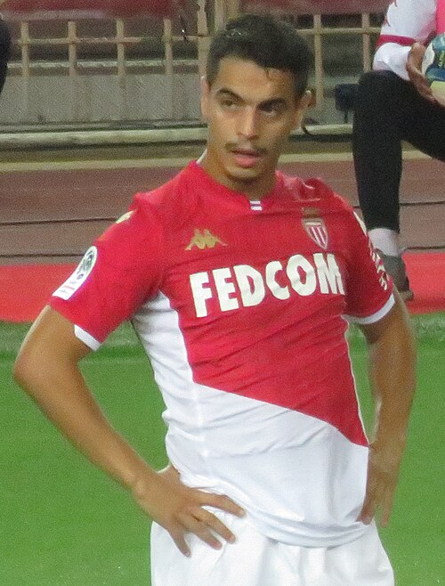

Sakaryaspor Portfolio
Current roster, squad value, top assets, U23 assets, honours, and market risk.
Squad Market Score76.6
Squad ARES Score76.1
Average Age27.4
Transfer RiskLow

Sakaryaspor
TFF First League | Turkey | Europe
Top AssetSalih Dursun
U23 Assets5
Honours Rows8
ConfidenceHigh
Roster source: Sakaryaspor | Checked 2026-05-24
Market Score vs Age
Squad portfolio shape by age and market score.
X-axis: Player ageY-axis: Market Score
ARESMarketTrendConfidence
How to read: Each point shows how squad age relates to market value.
Position Strength
GK, CB, FB, CM, W, CF portfolio balance.
X-axis: Position groupY-axis: Squad strength
ARESMarketTrendConfidence
How to read: Bars compare strength across the main football position groups.
Current Player Roster
| Player | Age | Position | Minutes / Role | ARES | Market | Tier | Trend | Confidence |
|---|---|---|---|---|---|---|---|---|
| SDDFSakaryasporSalih Dursun | 20 | DF | 2043 estimated minutes / current squad | 67.2 | 88.4 | Rising Asset | Rising | Medium |
| ADGKSakaryasporAtaberk Dadakdeniz | 32 | GK | 2480 estimated minutes / current squad | 80.5 | 87.1 | Core Starter | Stable | Medium |
| SYDFSakaryasporSerkan Yavuz | 24 | DF | 2709 estimated minutes / current squad | 78.1 | 84.7 | Core Starter | Stable | Medium |
| AODFSakaryasporAlaaddin Okumuş | 21 | DF | 1691 estimated minutes / current squad | 66.4 | 81.9 | Rising Asset | Stable | Medium |
| BDFSakaryasporBeşiktaş | 23 | DF | 2062 estimated minutes / current squad | 82.7 | 80.0 | Rising Asset | Stable | Medium |
| MKDFWSakaryasporMete Kaan Demir | 18 | FW | 2226 estimated minutes / current squad | 74.3 | 79.7 | Rising Asset | Stable | Medium |
| FMFSakaryasporFenerbahçe | 32 | MF | 700 estimated minutes / current squad | 72.1 | 78.2 | Core Starter | Rising | Medium |
| BÇDFSakaryasporBatuhan Çakır | 34 | DF | 2573 estimated minutes / current squad | 70.7 | 77.4 | Core Starter | Stable | Medium |
| KŞMFSakaryasporKerem Şen | 34 | MF | 2009 estimated minutes / current squad | 84.5 | 75.9 | Core Starter | Stable | Medium |
| ŁZFWSakaryasporŁukasz Zwoliński | 26 | FW | 2760 estimated minutes / current squad | 74.5 | 75.0 | Core Starter | Rising | Medium |
| SPMFSakaryasporSergio Peña | 32 | MF | 1720 estimated minutes / current squad | 79.8 | 73.1 | Core Starter | Stable | Medium |
| RDFSakaryasporRuan | 27 | DF | 2472 estimated minutes / current squad | 82.4 | 72.3 | Core Starter | Stable | Medium |
| HKMFSakaryasporHaydar Karataş | 23 | MF | 734 estimated minutes / current squad | 81.8 | 71.1 | Rising Asset | Rising | Medium |
| ISMFSakaryasporIsmaila Soro | 29 | MF | 840 estimated minutes / current squad | 82.5 | 70.5 | Core Starter | Rising | Medium |
| GFWSakaryasporGaziantep | 28 | FW | 1024 estimated minutes / current squad | 68.8 | 66.2 | Core Starter | Rising | Medium |
 Wissam Ben Yedder | 35 | FW | 2863 estimated minutes / Projected starter | 71.1 | 64.5 | Rotation Value | Flat | Medium |
U23 Assets
| Player | Age | Position | Market | Reason |
|---|---|---|---|---|
| SDDFSakaryasporSalih Dursun | 20 | DF | 88.4 | Current club roster row parsed from Wikipedia. |
| AODFSakaryasporAlaaddin Okumuş | 21 | DF | 81.9 | Current club roster row parsed from Wikipedia. |
| BDFSakaryasporBeşiktaş | 23 | DF | 80.0 | Current club roster row parsed from Wikipedia. |
| MKDFWSakaryasporMete Kaan Demir | 18 | FW | 79.7 | Current club roster row parsed from Wikipedia. |
| HKMFSakaryasporHaydar Karataş | 23 | MF | 71.1 | Current club roster row parsed from Wikipedia. |
Club Honours And Trophies
| Competition | Type | Count | Years | Source |
|---|---|---|---|---|
| Second League Category A | Team honour | 2 | 2004, 2006 | https://en.wikipedia.org/wiki/Sakaryaspor |
| Winners (2) | Team honour | 2 | 2004, 2006 | https://en.wikipedia.org/wiki/Sakaryaspor |
| Second League | Team honour | 2 | 1998, 2011 | https://en.wikipedia.org/wiki/Sakaryaspor |
| Winners (2) | Team honour | 2 | 1998, 2011 | https://en.wikipedia.org/wiki/Sakaryaspor |
| Third League | Team honour | 1 | 2017 | https://en.wikipedia.org/wiki/Sakaryaspor |
| Winners (1) | Team honour | 1 | 2017 | https://en.wikipedia.org/wiki/Sakaryaspor |
| Turkish Cup | Team honour | 1 | 1988 | https://en.wikipedia.org/wiki/Sakaryaspor |
| Winners (1) | Team honour | 1 | 1988 | https://en.wikipedia.org/wiki/Sakaryaspor |
Transfer Needs
| Need | Position | Reason | Priority | Suggested Profile |
|---|---|---|---|---|
| Role security and U23 depth | Depth risk review | Squad portfolio balance uses ARES score, market score, age curve, and roster coverage. | Medium | Current roster players sorted by Market Score |